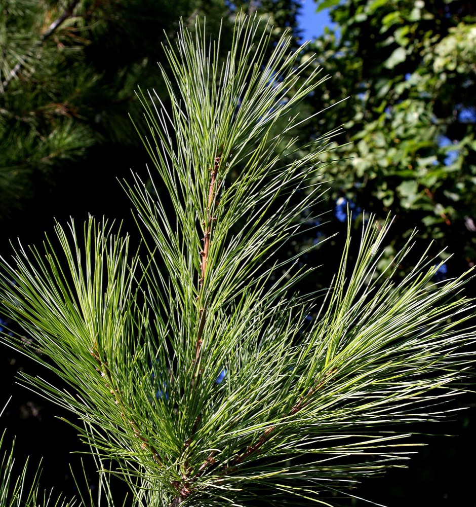
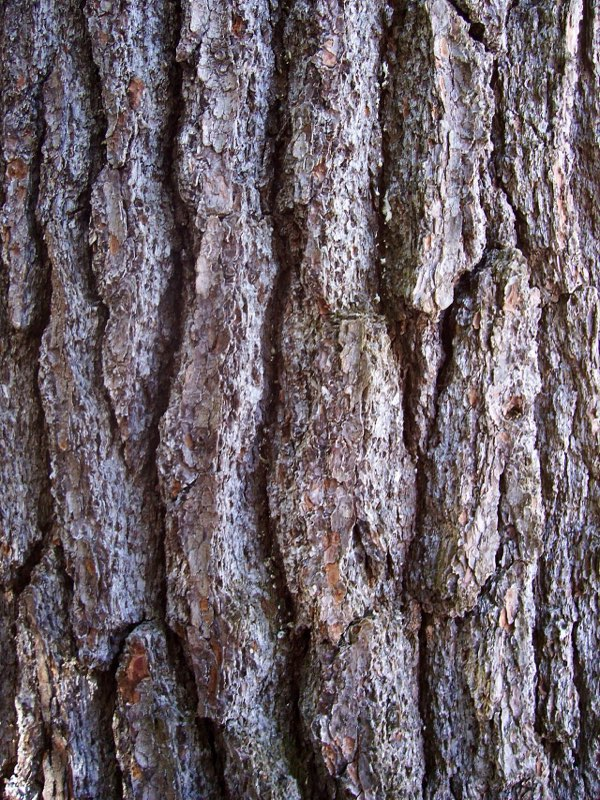

White Pine
Pinus strobus
- Also called
- White pine
- Kind
- tree · Pinaceae
- Native to Vermont
- yes
- Legal status
- Native; no special legal status found (checked 2026-10-30)
- Look-alikes
- Himalayan pine; Western white pine
Pictures


Names
Eastern white pine, Pinus strobus. The tallest tree in eastern North America (search summary of the landowner factsheet).
Range and habitat
Native. A large tree with a very straight trunk, often well over 100 feet. The crown is conical when young; with age it develops wispy, horizontal, upturning branches.
How to identify (by season; look-alikes and the key difference)
- Needles: five per bundle, 3 to 5 inches, slender and flexible, blue-green from white stomatal lines; the bundle sheath drops off.
- Cones: 4 to 7 inches, cylindrical, very resinous, on a long stalk.
- Look-alikes: Himalayan pine and western white pine. (The other Vermont conifers have single needles.)
By growth stage (trees: seedling, sapling, pole-size, mature or old; what to look at in each)
| Stage | What to look at | What you see |
|---|---|---|
| Small seedling | cotyledons, stem | Emerges with a whorl of several wispy cotyledons on a green stem. With only cotyledons out, it is much like red spruce but taller (often well over an inch) and sturdier. |
| Larger seedling | needles | Woody stems with needles in bundles of five; needles of younger seedlings are shorter than the 3 to 5 inches of full maturity. |
| Sapling and pole-size | bark, twig, crown | Young bark thin and smooth, gray-green with lighter splotchy patches; slender gray-green to orange-brown twigs; conical crown. |
| Mature and old trees | bark, crown | Thick reddish-brown to gray-brown bark with finely scaly, rounded, long ridges and darker furrows; wispy upturned branches. |
| Winter, any age | needles, buds | Evergreen: needles in fives; long ovoid reddish-brown buds. |
| Fruit (late summer) | cones | Long resinous cones. |
Through the year
Dates are typical for Vermont and shift with elevation and year; "approximate" means the source gave a season and the dates are a translation of it.
| When | What | Look for | What to do | Dates |
|---|---|---|---|---|
| Aug 15 to Sep 30 | cones (identify) | Long (4 to 7 inches), slender, very resinous cones on a long stalk, maturing in late summer. | - | approximate |
| Nov 1 to Mar 31 | dormant (identify) | Evergreen: slender, flexible blue-green needles 3 to 5 inches in bundles of five; long ovoid reddish-brown buds; on older trees wispy horizontal branches that turn upward. | - | approximate |
Signs on the land (tracks, scat, browse, nests, holes, calls)
Not described in the sources read.
Role in the forest (what it eats, what eats it, what it needs)
Turkeys roost in large white pine and hemlock in winter (Wild Turkey); white pine is an acceptable deer-yard softwood (White-tailed Deer). A search summary notes bears and cubs climb big trees to escape danger, and names white pine weevil and white pine blister rust as the main pests.
What helps it thrive (light, soil, shelter, food and the trees it uses)
- Light: intermediate in shade tolerance; seedlings need at least 20 percent of full light to survive. The two-cut shelterwood is recommended to maximize regeneration, and established trees respond well to release (FEIS).
- Soil and place: grows on nearly all soils; it is most competitive on fairly infertile sandy soils such as well-drained outwash, and on clay or poorly drained soils only as individuals or small groups; it has a lower soil pH limit of about 4.0. In New England it usually occurs between sea level and 2,000 feet and is the characteristic old-field tree.
- Seedbed and seed: favorable seedbeds are moist mineral soil, mosses and short grass cover of light to medium density; good seed years come every 3 to 5 years.
- Pests and wildlife: the white pine weevil is among its more damaging pests; songbirds and small mammals eat the seeds; hares, deer and cottontails browse the foliage; bald eagles nest in living trees, trees with broken tops give cavity-nesting habitat and bear cubs climb large trees for safety (Pruning Trees covers pruning pine for clear logs).
Managing for it (habitat practices) and living with it (conflicts and damage)
Not recorded here.
Legal status
No special status found.
Sources
- Virginia Tech Dendrology, Eastern white pine: https://dendro.cnre.vt.edu/dendrology/syllabus/factsheet.cfm?ID=111 (read 2026-10-30)
- J. Robertson and J. Truong, A Guide to the Seedlings of New England (FEMC, 2021): https://www.uvm.edu/femc/attachments/project/999/seedling_guide-compressed_1.pdf
- USDA Forest Service, Fire Effects Information System, Pinus strobus: https://www.fs.usda.gov/database/feis/plants/tree/pinstr/all.html (read through a summarizing fetch 2026-11-01)
What this page is based on
Kind of source: mixed (Virginia Tech factsheet; New England seedling guide; the Vermont Landowner's Guide)
What was read: Virginia Tech Dendrology factsheet (ID 111) for eastern white pine, read through a summarizing fetch on 2026-10-30, and the white pine pages of A Guide to the Seedlings of New England (read as text). The factsheet gives no habitat; the pest notes are from a search summary. Calendar windows translate 'late summer' and 'winter'. Habitat needs (light, soil, regeneration, response to cutting) added 2026-11-01 from the USDA Forest Service Fire Effects Information System species review (summarizing fetch); the review is national in scope and the Northeast details are those it names.
Last checked: 2026-10-30
Vermont land and forest reference, built 2026-11-01. Rules and dates here are summaries, not legal advice; dates shift with elevation and year. Photo and recording credits · Note: _reference/US-VT/Species/White Pine.md